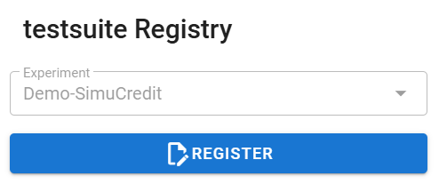

Model Test#
The Model Test panel enables the evaluation of model performance across four key dimensions: Performance, Reliability, Robustness, and Resilience.
Initialize the Panel#
To create and initialize the Model Test panel, use:
# Load the Experiment and test a model
from modeva import Experiment
exp = Experiment(name='Demo-SimuCredit')
exp.model_test()
Workflow#
Step 1: Select Dataset & Model#
Select a Dataset: The dataset from the dropdown for processing is automatically selected based on the processed dataset of the experiment (e.g.,
Demo-SimuCredit_md).Set the Data Selection: Choose a data split (e.g.,
test).Set Select Model: Pick a registered model from the dropdown (e.g.,
XGBoost).
Step 2: Performance Evaluation#
Select Evaluation Metric:
Choose a task-specific metric (e.g.,
MSEfor regression,AUCfor classification).
Residual Analysis:
Select a feature for the X-axis to visualize prediction residuals.
View Outputs:
Summary Table: Displays key accuracy metrics.
Residual Plot: Visualizes residuals against the selected feature.
{kind=link}
Step 3: Reliability Testing#
Configure Settings:
Expected Coverage: Define confidence interval width (e.g.,
0.9for 90% coverage).Worst Ratio: Set the acceptable error threshold (e.g.,
0.1).
View Outputs:
Calibration Plot: Compares predicted vs. actual confidence intervals.
Distribution Shift (PSI): Assesses data stability between training and test sets.
{kind=link}
Step 4: Robustness Testing#
Configure Perturbations:
Features: Select features to perturb (e.g.,
Mortgage).Method: Choose
quantile(distribution-based) ornormal(Gaussian noise).Noise Level: Define perturbation strength (e.g.,
0.1).
View Outputs:
Robustness Plot: Displays performance degradation under noise.
Locate Features: Identifies features with the most significant distribution shift on prediction changes after perturbation.
Distribution Shift: Click the bar of interest from the PSI bar plot to view the feature distribution shift between base and worst samples.
{kind=link}
Step 5: Resilience Testing#
Configure Settings:
Method: Select
worst-sample(identifies hard samples) orouter-sample(boundary samples).Worst Ratio: Define the proportion of worst-case samples (e.g.,
0.1).
View Outputs:
Resilience Plot: Displays performance degradation on challenging samples.
PSI Plot: Identify features with the most significant distribution shift on performance.
Distribution Shift: Click the bar of interest from the PSI bar plot to view the feature distribution shift between base and worst samples.
{kind=link}
Step 6: Saving Results#
{kind=link}
{kind=link}
This panel provides actionable insights into model behavior under real-world conditions. For advanced analysis, use the linked distribution visualizations to drill into specific features. For more information, refer to the Diagnostic Suite.